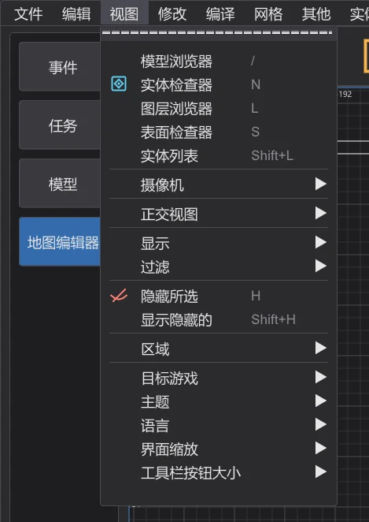
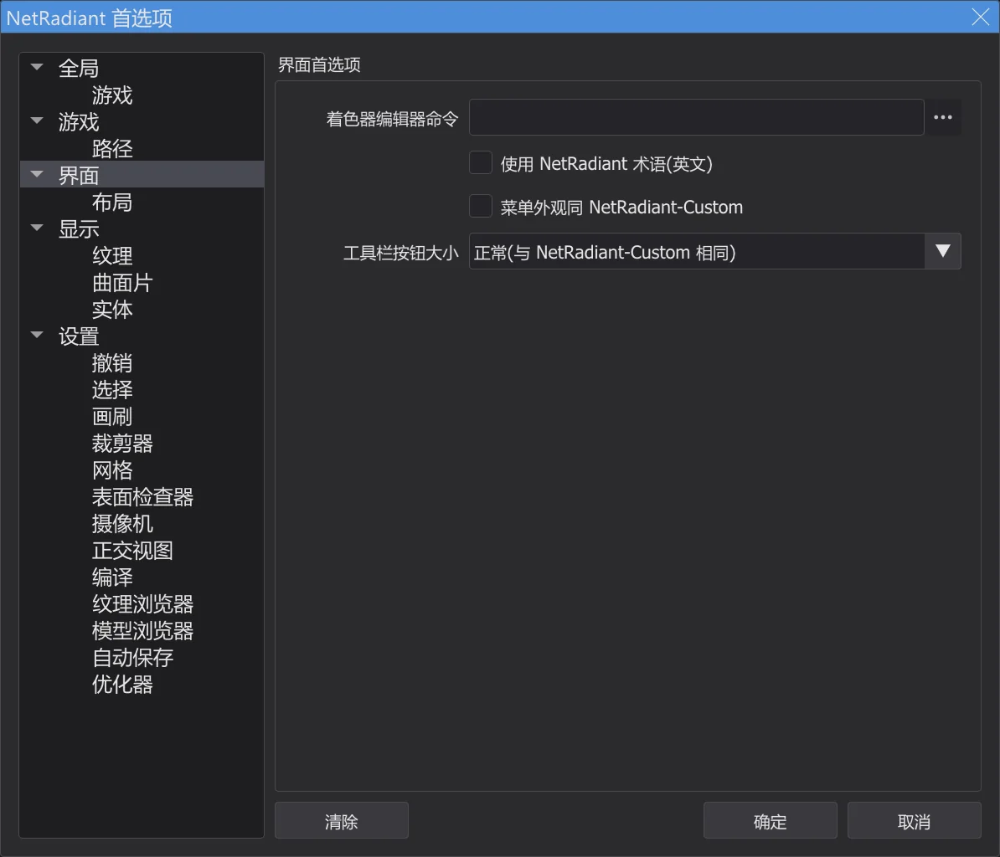
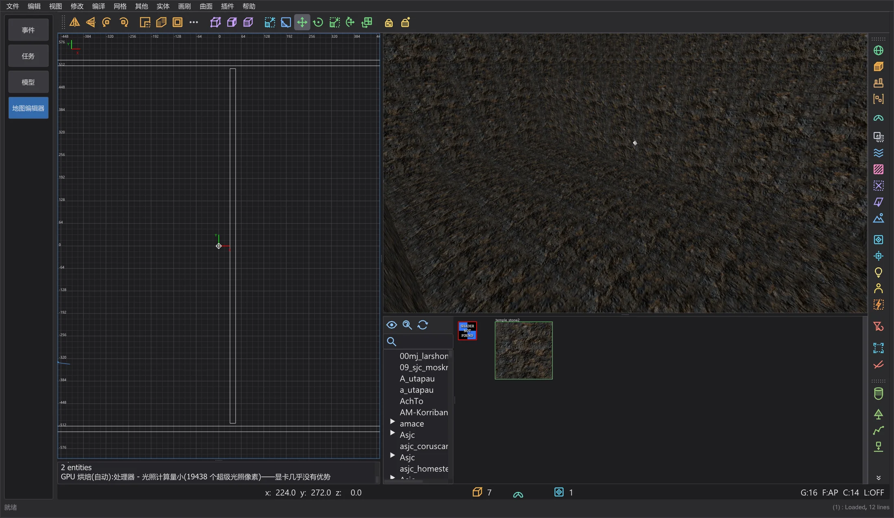

地图与场景
地图编辑器:与 NetRadiant-Custom 的区别
地图编辑器在外观和操作上遵循 NetRadiant-Custom 20260114。NetRadiant-Custom、Xonotic NetRadiant、GtkRadiant 和 q3map2 的已知错误都逐一检查过:JK Studio 有哪些不同之处,以及哪些地方有意与 NetRadiant-Custom 保持一致。
自有操作(NetRadiant-Custom 中没有)#
- JK Studio 风格的菜单。地图编辑器的菜单栏和所有菜单与程序其他部分的菜单外观相同。条目、顺序、子菜单、勾选、快捷键、助记键以及每个条目的功能都与 NetRadiant-Custom 相同。Preferences > Interface > 菜单外观同 NetRadiant-Custom 可恢复 NetRadiant-Custom 的外观。
- View 中的程序设置。在 视图 的末尾:目标游戏、主题、语言、界面缩放 和 工具栏按钮大小——作用与程序 View 菜单中的相同。语言、配色和缩放也仍保留在 其他 的末尾。
- 工具栏按钮大小。主工具栏、过滤器工具栏和插件工具栏可选 小、正常(与 NetRadiant-Custom 相同) 或 大,位于 Preferences > Interface 和 视图 > 工具栏按钮大小。立即生效并会保存;视图会随工具栏一起移动。
- 在地图编辑器中,Ctrl + 鼠标滚轮不会缩放程序:与 NetRadiant-Custom 一样,滚轮归视图使用(2D 中缩放、摄像机中移动、纹理浏览器中滚动),按住 Ctrl 也一样。缩放位于 视图 > 界面缩放。
- 窗口标题。在地图编辑器中,标题显示地图名称,有未保存更改时显示
*,与 NetRadiant-Custom 相同。 - 自有编译功能。带剩余时间的 编译进度 窗口、部分编译:重用 VIS 和 部分编译:重用光照、添加到已编译的地图(地图编辑器:编译进度与部分编译)、保留编辑器数据、从几何体恢复 misc_model 和 估算灯光(实验性)(保留编辑器数据)——每项都有自己的菜单项或选项,并注明“NetRadiant-Custom 中没有”。bhed_q3map2 为此提供了开关
-bhedvisreuse、-bhedlightcache和-bhedmodels;不使用这些开关时,编译方式与以前相同。 - 自有编辑器工具(第 8b 阶段)。用于 Split 布局的 自由分配分割窗口、在编辑器中游玩(F6)、逻辑视图、摄像机视图模式、镜像模式 和 撤销历史(地图编辑器:地形、试玩、逻辑、镜像及更多)——每项都有自己的菜单项或选项,并注明“NetRadiant-Custom 中没有”,默认全部关闭。Terrain Generator 来自 NetRadiant-Custom 20260114 版本之后的源代码;它的固定种子是自有补充。从几何体恢复 misc_model 借助缓存的模型索引在所有模型文件夹中查找。bhed_q3map2
-light -bhedgpu在显卡上进行阴影测试,结果逐字节相同,但保持关闭(在测量所用的电脑上没有提速)。






编辑器:已修复的错误#
| 报告 | NetRadiant-Custom | JK Studio |
|---|---|---|
| NRC#65 | 离开顶点或边模式后组件仍处于选中状态,下一次拖动会使笔刷变形。 | 离开顶点或边模式时会取消选择这些组件。 |
| NRC#302, GL#206 | 根据曲面片的方向,斜面和反向斜面封盖可能生成两个退化的曲面片。 | 按尺寸和形状选择封盖方向,每个封盖都有面。 |
| NRC#130 | 路径中含有变音符号或其他非 ASCII 字符时:地图无法打开,设置会被损坏。 | 编辑器和 bhed_q3map2 可以处理任何路径(例如 C:\Users\Jörg\...)。 |
| NRC#164 | 使用相对引擎路径(../../Academy/)保存时会触发断言。 | 设置路径时会将其转换为绝对路径。 |
| NRC#213 | AutoCaulk 失败时只显示 "reading ..._ac.caulk failure",没有原因。 | 控制台会显示 q3map2 的输出和原因。 |
| NRC#145 | 使用 Jedi Academy 的着色器时,AutoCaulk 会把非实体的 system/nodraw 用在实体笔刷上,并使用该游戏中不存在的 watercaulk。 | 使用 Jedi Academy 和 Jedi Outcast 的 system.shader 中的名称:nodraw_solid、caulk_water、caulk_lava、caulk_acid;游戏中没有的着色器不会使用。AutoCaulk 以编辑器当前的游戏调用 q3map2(-game ja/jk2)。 |
| NRC#261 | 表面检查器会把其他编辑器写入的未规范化笔刷图元偏移显示为微调框的上限(8192);此时点击箭头或按 Enter 会移动纹理。 | 超出微调框范围时,显示的值会减去整块平铺数,对齐不变;在设置新值之前 .map 保持不变。 |
| NRC#279 | 封盖只适用于特定尺寸的曲面片;控制台只用英文说明。 | 限制相同(有意为之);英文提示下方会用程序语言说明每种封盖所需的尺寸。 |
| NRC master | 标签 20260114 之后修正的文字错误(bobToolz Door Builder 的 "East - West"、"Distance Multiplier")。 | 已采用。 |
检查中发现的问题
- 在纹理浏览器中选择纹理后,它现在确实会成为新笔刷的着色器(以前从未保存)。
- 标签窗口的状态被保存了两次而丢失;首选项中的 清除 按钮没有作用。
- 每个菜单项、按钮、按键和字段都检查过其效果;每个修改地图的命令都能逐字节地撤销和重做。
bhed_q3map2:已修复的错误和有意的输出差异#
| 报告 | NetRadiant-Custom | JK Studio |
|---|---|---|
| Tester (Stage 7) | -convert(File > Open .bsp)会把 Jedi Academy、Jedi Outcast 和 SoF2 地图中的 hint、areaportal 和 skip 笔刷写成 detail:这些游戏中 "structural" 没有内容标志,对透明 structural 笔刷的检查永远不起作用。 | 与编译时一样由着色器的编译标志决定(q3map_structural / surfaceparm structural):这些笔刷会像源地图中一样以 structural 还原。 |
| GL#173 | 非确定性:每次编译都会写出不同的 .bsp(以着色器指针作为排序键、未初始化的光照贴图坐标、-vis 和 -light 中的线程竞争);生成的样式着色器名称每次编译都会变化。 | BSP 阶段和光照阶段对同一张地图每次都给出相同结果,任意线程数都与单线程编译相同;单线程时 -light 与 NRC 逐字节一致。可见性阶段与 NRC 相同:单线程时总是相同,多线程时每次编译的结果可能略有不同。 |
| NRC#101 | Dirtmapping(-dirty)会把靠近天空的面压暗,就像天空是一堵墙。 | 穿过天空离开地图的 dirt 光线不会压暗。 |
| NRC#102, GL#154 | 地图名含点号(test.q3、foo_0.1)且不带 .map 时,点号之后的部分会丢失。 | 只替换 q3map2 自己的扩展名(编辑器本来就总是传递完整路径)。 |
| PR #316 | 内存错误:没有平面的笔刷面会读取 mapplanes[-1];在没有 deluxemap 时引用 deluxel。 | 已修复(用 AddressSanitizer 和 UBSan 检查了回归地图以及三款游戏的全部反编译地图);输出不变。 |
| PR #316 | 小于一个立方单位的薄笔刷部分会被丢弃;窄于 0.2 单位的交叉面会消失;几乎位于另一个面所在平面上的面不会被绘制;截面很小的笔刷不会被切分,其中一部分因此没有碰撞。 | 采用了该拉取请求中的五项修复——每项都单独在 Jedi Academy 和 Jedi Outcast 的原版地图上检查过:没有地图变差。未采用:仅在入口退化时才丢弃入口——这样 106 张原版地图中有 42 张会泄漏(NetRadiant-Custom 会封闭的窄缝)。 |
| ASan, UBSan | 处理损坏的地图文件(完全没有实体、最后一个字符是引号、极大的数字)以及为光照贴图细分曲面片时会崩溃或出现未定义行为。 | 通过在 AddressSanitizer 和 UBSan 下对 300 张故意损坏的地图和原版地图运行 bhed_q3map2 发现,已修复。没有实体的地图现在会得到明确的错误信息。有效地图的输出逐字节不变。 |
| Decimal | (编辑器)保存地图时约 1e10 以上的数字会被截断;1e20 会变成 1。 | 数值会被保留(由针对损坏地图文件的新模糊测试发现);普通坐标的写法与以前完全相同。 |
因此,用 bhed_q3map2 编译的 .bsp 与用 NetRadiant-Custom 的 q3map2 编译的相比,区别在于面的顺序和光照贴图的排布,而不是几何体。NetRadiant-Custom 的 q3map2 本身也从不会两次写出相同的文件。
如游戏中的预览#
| 报告 | NetRadiant-Custom | JK Studio |
|---|---|---|
| OpenJK#1358 | (引擎)剔除点 origin + (0 0 zoffset+1) 位于实体内部的 misc_model_static 永远不会被绘制。 | "如游戏中"预览同样不会显示它,优化器会提供使其重新出现的 zoffset(地图编辑器:优化器与限制)。 |
| JKHub | (游戏)光照样式:修改实体后,可开关的灯光(带 targetname)会开关错误的灯光——-onlyents 会重新编号样式,而光照贴图保留旧的编号。 | 当可开关的灯光与原始 .bsp 不同时,仅更新实体 会拒绝执行,并要求完整编译(地图编辑器:打开并修改已完成的地图)。 |
与 NetRadiant-Custom 保持一致#
- 摄像机位于笔刷内部(第 7 阶段):背面会被剔除,因此你所在的笔刷会消失——除非其着色器写有
cull none、cull twosided或cull disable(雾体积、玻璃、水);这时从内部仍能看到它的墙面,与 NetRadiant-Custom 相同(renderstate.cpp OpenGLShader::construct,shaders.cppcull)。 - NRC#281:对多个目标按 Ctrl+K 会赋予相同的 targetname——与 NRC 相同。
- NRC#132:区域中没有实体且摄像机位于笔刷内部时,区域编译会泄漏——与 NRC 相同;JK Studio 会在这种编译前发出警告。
- NRC#48:在 RBSP(Jedi Academy、Jedi Outcast)中,外部光照贴图无法与光照样式同时使用——这是格式本身的限制;编译菜单和优化器会拒绝这种组合并说明替代办法。
- GL#189、NRC#144:地板下的面光源会因 backsplash 而透过地板——与 NRC 相同;优化器能找到这类光源(地图编辑器:优化器与限制)。